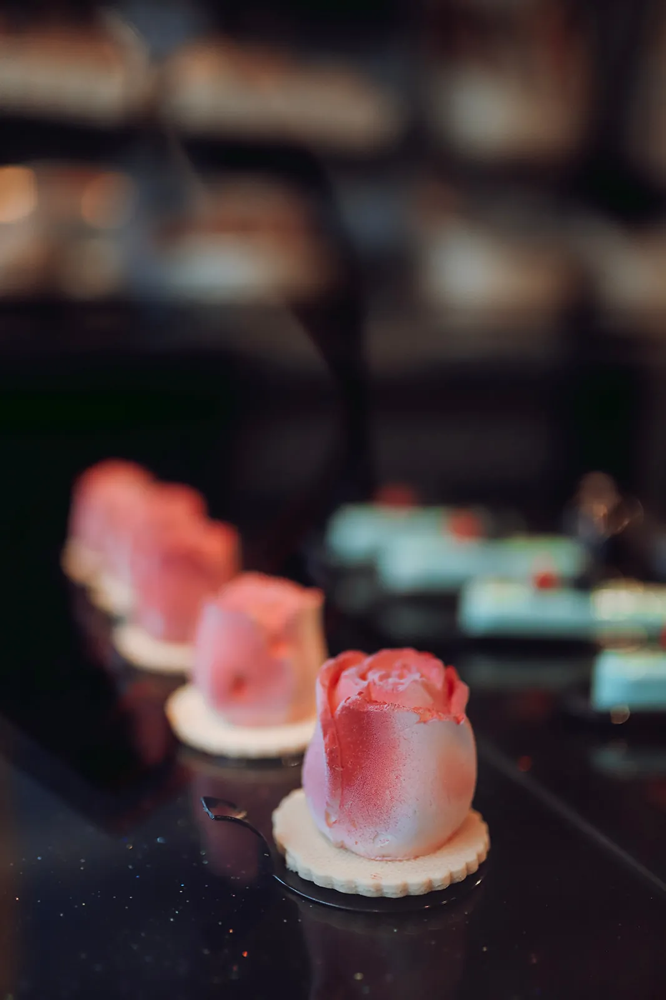
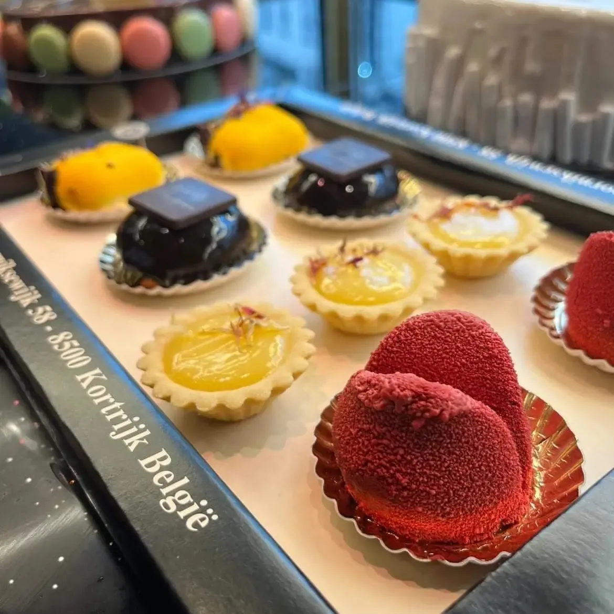
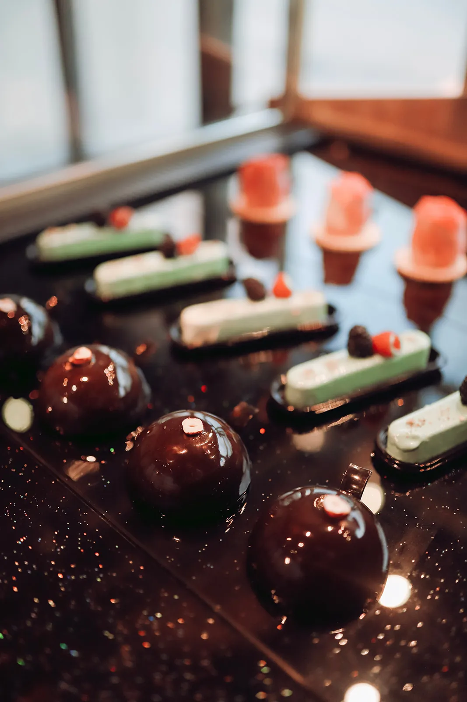
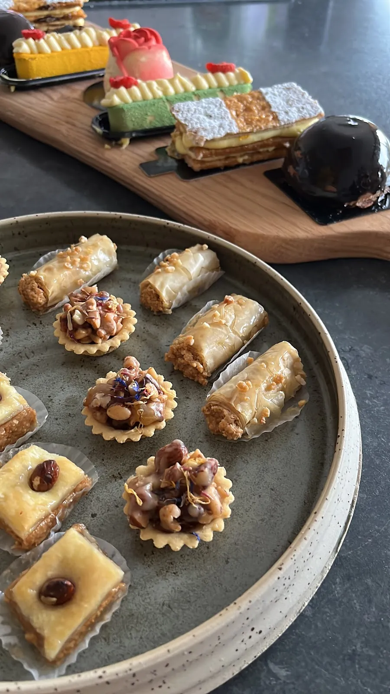
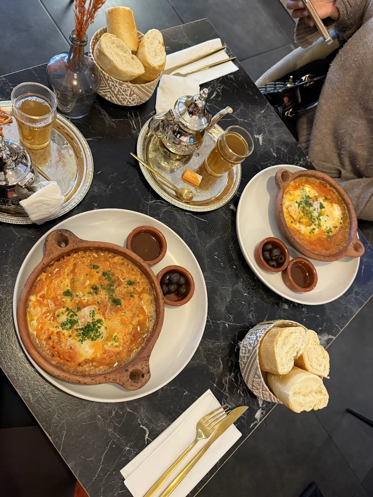
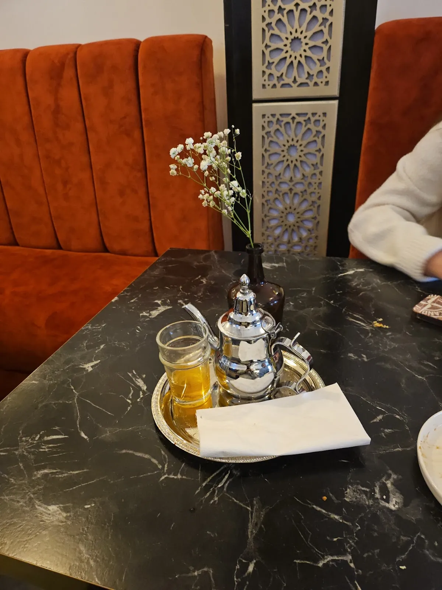
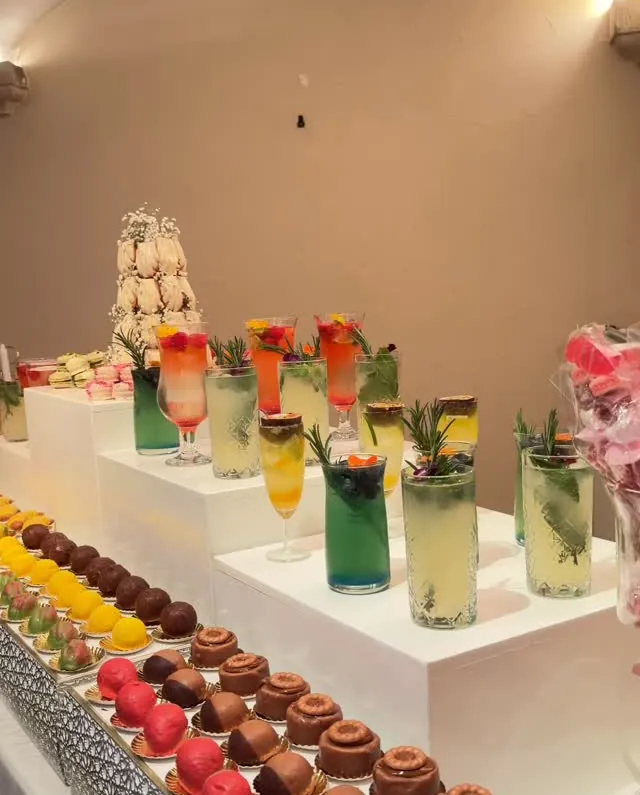
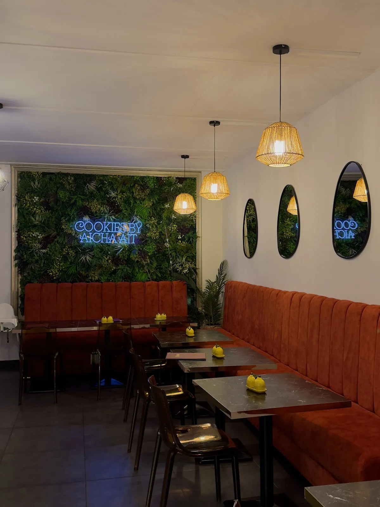
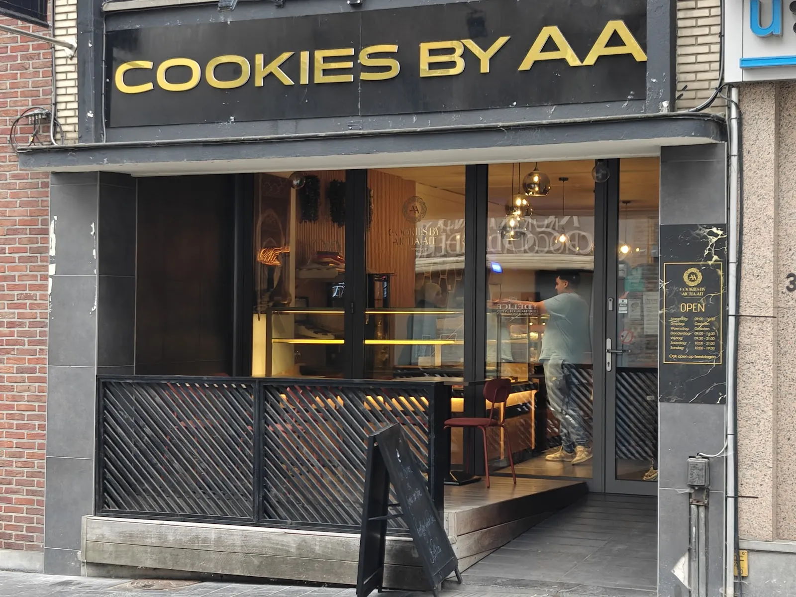

Brunch in de zaak
Af en toe pakken we in de zaak uit met een brunch vol zoet en hartig. Pure verwennerij. Volg ons op Instagram, dan mis je de volgende editie niet.
Bij ons vind je fijne patisserie en Marokkaanse lekkernijen onder één dak. Kom ontbijten met verse muntthee, schuif aan voor een harira als lunch of neem een doos gebakjes mee naar huis.

Fruittaartjes, Saint Sebastian cheesecake, New York rolls en Marokkaanse koekjes volgens traditionele recepten. Alles komt uit onze eigen keuken, en voor de chocolade gebruiken we echte Belgische.







Niet alleen zoet dus. 's Ochtends ontbijt je hier met msemen en honing, 's middags staan er Marokkaanse klassiekers op de kaart. Liever iets gekends? Er zijn ook broodjes, croques en salades.
Van een verlovingsfeest tot een iftar met de hele familie: wij vullen je tafel met zoet en hartig, en zetten alles mooi klaar.
Af en toe pakken we in de zaak uit met een brunch vol zoet en hartig. Pure verwennerij. Volg ons op Instagram, dan mis je de volgende editie niet.

Mini-taartjes, trompe-l'oeil creaties, prestige koekjes en mocktails voor een verloving, een trouw of een iftar. Vertel ons hoeveel gasten je hebt.

Samen de mooiste taartkunstwerkjes maken. Vanaf zes personen en vanaf acht jaar, bij ons in de zaak of bij jou thuis.
Voor een workshop of een plekje aan de brunch stuur je een DM naar onze reservatiepagina op Instagram. Voor een buffet bel of WhatsApp je ons gewoon.
Naar de reservaties58 reviews op Google. Over de gebakjes, de brunch en de warme ontvangst.
"Aanrader! Een van de betere patissiers in Kortrijk met oog voor detail en decoratie. Niet dus alleen lekker, maar ziet er ook heel goed uit."
"Afgelopen weekend een fantastische brunch gehad! Wat een smaakexplosies en vooral enorm uitgebreid assortiment! Prijs/kwaliteit top!! Mijn complimenten aan de chef voor al die heerlijke smaken. Ik durf te zeggen de beste tot nu toe in Kortrijk!"
"Heerlijk binnen ontbeten as royalty met een lekkere verse muntthee, msemen met honing,... voor geen geld. Konden uiteraard ook niet vertrekken zonder een doos met Newyorkse rolls! Ik ben alvast verzadigd en ik kijk uit naar vrijdag om de couscous te proberen!"
Oranje fluwelen banken, een groene muur en de vitrine in het zicht. De zaak is ook vlot toegankelijk met een rolstoel.


Ik maakte deze demo voor jullie om te tonen wat er kan. Na een kort gesprek maak ik er iets veel persoonlijkers van, helemaal naar jullie wens.
Vrijblijvend. Ik kom langs of we bellen.
Op maat, op jullie eigen domein.
Geen voorschot. Jullie betalen pas als alles klaar is.
Hosting, domeinnaam en kleine wijzigingen, zoals nieuwe openingsuren.
Omdat een voorbeeld meer zegt dan een mail. Zo zien jullie meteen wat er kan, en het kost jullie niets.
Nee. Het gesprek is vrijblijvend. Vinden jullie het niks, dan is het daarmee gedaan.
Na ons gesprek staat jullie site binnen 10 tot 14 dagen online.
Zeker. Jullie domeinnaam kan gewoon blijven, de nieuwe site komt in de plaats van de oude.
Nee, dat doe ik op basis van ons gesprek. Eigen foto's zijn mooi meegenomen, maar niet nodig om te starten.